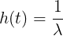
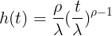
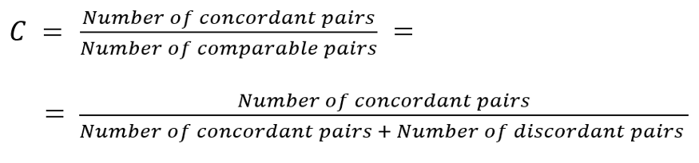
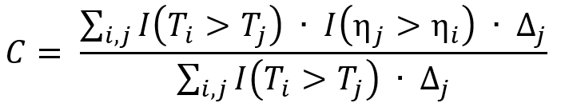
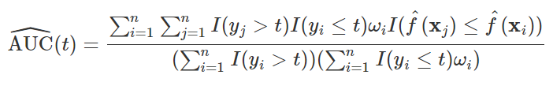

113 Survival
113.1 Misc
- Model for estimating the time until a particular event occurs
- e.g. death of a patient being treated for a disease, failure of an engine part in a vehicle
- Prediction models for survival outcomes are important for clinicians who wish to estimate a patient’s risk (i.e. probability) of experiencing a future outcome. The term ‘survival’ outcome is used to indicate any prognostic or time-to-event outcome, such as death, progression, or recurrence of disease. Such risk estimates for future events can support shared decision making for interventions in high-risk patients, help manage the expectations of patients, or stratify patients by disease severity for inclusion in trials.1 For example, a prediction model for persistent pain after breast cancer surgery might be used to identify high risk patients for intervention studies
- Outcome variable: Time until event occurs
- packages
- {survival}
- {censored} - tidymodels package for censored and survival modelling
- {quantreg} - quantile survival regression
- {msm} - multi-state models
- Vignette for {msm}
- See Multistate Models for Medical Applications
- Tutorial using a heart transplant dataset
- Standard survival models only directly model two states: alive and dead. Multi-state models enable directly modeling disease progression where patients are observed to be in various states of health or disease at random intervals, but for which, except for death, the times of entering or leaving states are unknown.
- Multi-state models easily accommodate interval censored intermediate states while making the usual assumption that death times are known but may be right censored.
- {grf} - generalized random forest; causal forest with time-to-event data
- {partykit} - conditional inference trees; model-based recursive partitioning trees; can be used with {survival} to create random survival forests
- {bonsai}: tidymodels partykit conditional trees, forests; successor to treesnip - Model Wrappers for Tree-Based Models
- {aorsf} - optimized software to fit, interpret, and make predictions with oblique random survival forests (ORSFs) {{sklearn}} - Random Survival Forests, Survival Support Vector Machine
- Notes from
- Why not use a standard regression model?
- Units that “survive” until the end of the study will have a censored survival time.
- i.e. we won’t have an observed survival time for these units because they survive for an unknown time after the study is completed.
- We don’t want to discard these units though, as they still have useful information.
- Units that “survive” until the end of the study will have a censored survival time.
- Sample Size
- Models
- Kaplan Meier model (i.e. K-M survival curve)
- Often used as a baseline in survival analysis
- Can not be used to compare risk between groups and compute metrics like the hazard ratio
- Exponential model, the Weibull model, Cox Proportional-Hazards, Log-logistic and the Accelerated Failure Time (AFT)
- Multi-State Models
- Hazard rates and Cumulative Hazard rates are typical quantities of interest
- Kaplan Meier model (i.e. K-M survival curve)
- Log-Rank Test (aka Mantel-Cox test) - tests if two groups survival curves are different
non-parametric; a special case with one binary X
The intuition behind the test is that if the two groups have different hazard rates, the two survival curves (so their slopes) will differ.
Compares the observed number of events in each group to what would be expected if the survival curves were identical (i.e., if the null hypothesis were true).
Example
library(survival) dat <- data.frame( group = c(rep(1, 6), rep(2, 6)), time = c(4.1, 7.8, 10, 10, 12.3, 17.2, 9.7, 10, 11.1, 13.1, 19.7, 24.1), event = c(1, 0, 1, 1, 0, 1, 1, 1, 0, 0, 1, 0) ) dat ## group time event ## 1 1 4.1 1 ## 2 1 7.8 0 ## 3 1 10.0 1 ## 4 1 10.0 1 ## 5 1 12.3 0 ## 6 1 17.2 1 ## 7 2 9.7 1 ## 8 2 10.0 1 ## 9 2 11.1 0 ## 10 2 13.1 0 ## 11 2 19.7 1 ## 12 2 24.1 0 survdiff(Surv(time, event) ~ group, data = dat ) ## N Observed Expected (O-E)^2/E (O-E)^2/V ## group=1 6 4 2.57 0.800 1.62 ## group=2 6 3 4.43 0.463 1.62 ## ## Chisq= 1.6 on 1 degrees of freedom, p= 0.2 # plot curves with pval from test fit <- survfit(Surv(time, event) ~ group, data = dat) ggsurvplot(fit, pval = TRUE, pval.method = TRUE )- pval > 0.05, so there isn’t enough evidence to that they’re different.
113.2 Components
- Survival Time (T) (aka death, failure time, event time): time at which the event occurs
- Censoring Time (C): time at which censoring occurs
- For each unit, we observe T or C.
- Y = min(T, C)
- right censoring: occurs when the event has happened after the enrollment (but the time is unknown).
- The patient does not experience the event for the whole duration of the study.
- The patient withdraws from the study.
- The patient is lost to follow-up.
- left censoring: occurs when the event has happened before the enrollment (but the time is unknown).
- For each unit, we observe T or C.
- Cumulative hazard function (aka Cumulative Hazard Rates)
- Shows the total accumulated risk of an event occurring at time t
- The area under the hazard function
- Hazard Rate (aka Risk Score), h(t | X)
- The hazard rate is the probability that a unit with predictors, X, will experience an event at time, t, given that the unit has survived just before time, t.
- The formula for the Hazard Rate is the Hazard function.
- Hazard Ratio (aka Relative Risk of an event): Risk of an event given category / risk of an event given by reference category
- The ratio of two instantaneous event rates
- Coefficient of the Cox Proportional Hazards model (e.g. paper)

- eβ > 1 (or β > 0) for an increased risk of event (e.g. death).
- eβ < 1 (or β < 0) for a reduced risk of event.
- HR of 2 is equivalent to raising the entire survival curve for a control subject to the second power to get the survival curve for an exposed subject
- Example: if a control subject has 5y survival probability of 0.7 and the exposed:control HR is 2, the exposed subject has a 5y survival probability of 0.49
- If the HR is 1/2, the exposed subject has a survival curve that is the square root of the control, so S(5) would be √0.7 = 0.837
- Status indicator, δ
- δ = 1, if T ≤ C (e.g. unit fails before study ends)
- True survival time is observed
- δ = 0, if T > C (e.g. unit survives until end of study or has dropped out)
- Censoring time is observed
- δ = 1, if T ≤ C (e.g. unit fails before study ends)
- Survival function (aka Survival Rate), S(T > t):
- Outputs the probability of a subject surviving (i.e., not experiencing the event) beyond time t
- Monotonically decreasing (i.e. level or decreasing)
- Baseline survival curve illustrates the survival function when all the covariates are set to their median value
113.3 Kaplan-Meir
- Misc
- Useful for validation of Proportional Hazards assumption. When lines cross the assumption, hazards are found to be non-proportional.
- Harrell RMS (Ch. 20.3):
- For external validation: at least 200 events
- Need 184 subjects with an event, or censored late, to estimate to within a margin of error of 0.1 everywhere, at the 0.95 confidence level
- Order event times (T) of units from smallest to largest, t1 < …. < tk
- Calculate probability that a unit survives past event time, ti, given that they survived up until event time, ti (i.e. past ti-1) (conditional probability)
- e.g. for t1, it’s (n1 - d1) / n1
- n1 is the number of units that have survived at t1
- d1 is the number of units that have experienced the event (e.g. died) at t1
- Similar for other t values
- Median survival time is where the survival probability equals 0.5
- e.g. for t1, it’s (n1 - d1) / n1
- Survival function[](./_resources/Regression,_Survival.resources/1-bp-FZyIs1WlqYgQMWn9Obw.gif]]
- The survival function computes the products of these probabilities resulting in the K-M survival curve
- The product of these conditional probabilities reflects the fact that to survive past event time, t, a unit must have survived all previous event times and the current event time.
- Example: 50 patients
.png)
- Dotted lines represent 95% CI
- Red dots indicate time when patients died (aka event times)
- Median survival time is ~ 13yrs
113.4 Exponential
- Assumes that the hazard rate is constant
- i.e. risk of the event of interest occurring remains the same throughout the period of observation
- Survival function
- Hazard function
- h(t) is the constand hazard rate
- Estimated parameter: λ
113.5 Weibull
- Assumes the change in hazard rate is linear.
- Survival function
- Hazard function
 - Estimated parameters: λ and ρ
- λ parameter indicates how long it takes for 63.2% of the subjects to experience the event.
- ρ parameter indicates whether the hazard rate is increasing, decreasing, or constant.
- If ρ is greater than 1, the hazard rate is constantly increasing.
- If ρ is less than 1, the hazard rate is constantly decreasing.
113.6 Cox’s Proportional Hazards
- Multivariable regression model
- Allows the hazard rate to fluctuate
- Harrell: “under PH [assumption] and absence of covariate interactions, HR is a good overall effect estimate for binary [treatment]”
- Misc
- Assumes
- Hazard ratios (ratio of hazard rates or exp(β) between groups/units remain constant
- i.e. no matter how the hazard rates of the subjects change during the period of observation, the hazard rate of one group relative to the other will always stay the same
- Hazard Ratios are independent of time
- Example: Immunotherapy typically violates PH assumptions (post)

- The survival probabilities between the treatment (blue) and the chemo (red) cross at around the 4.2 months
- The distance between the lines should remain somewhat constant throughout the trial in order to adhere to the PH assumptions (1st assumption)
- Also think the lines should be somewhat straight. (2nd assumption)
- Patients in immunotherapy drug trials often experience a period of toxicity, but if they survive this period, they have a much better outcome down the road.
- The survival probabilities between the treatment (blue) and the chemo (red) cross at around the 4.2 months
- Tests
- Grambsch and Therneau (G&T)
- See Harrell RMS (Ch. 20.6.2)
- If assumptions are violated,
- Gelman says to try and “expand the model, at the very least by adding an interaction.” (post)
- See Harrell RMS (Ch. 20.7)
- Use a different model
- Accelerated Failure Time (AFT) model (See ML >> Gradient Boosting Survival Trees)
- Adjusted Cox PH model with Time-Varying Coefficients
- Must choose a functional form describing how the effect of the treatment changes over time
- Recommended to use AIC criteria to guide one’s choice among a large number of candidates
- Must choose a functional form describing how the effect of the treatment changes over time
- Hazard ratios (ratio of hazard rates or exp(β) between groups/units remain constant
- Models event time (T) outcome variable and outputs parameter estimates for treatment (X) effects
- Provides a way to have time-dependent (i.e. repeated measures) explanatory variables (e.g. age, health status, biomarkers)
- Can handle other types of censoring such as left or interval censoring.
- Has extensions such as lasso to handle high dimensional data
- DL and ML models also have versions of this method
- Hazard function
- h(t |X) = h0(t)exβ
- The hazard rate for a unit with predictors, X, is the product of a baseline hazard, h0(t) (corresponding to X = 0) and a factor that depends on X and the regression parameters, β
- Optimized to yield partial maximum likelihood estimates, β^.
- Doesn’t require the specification of h0(t) which makes the method flexible and robust
- Hazard Ratio (aka relative risk) for a binary covariate (e.g. treatment) = eᶜᵒᵉᶠ
- Interpretation:
- Hazard Rate (risk of the event): Moving from the reference category to the other category changes the hazard rate by a factor of eᶜᵒᵉᶠ
- e.g. eᶜᵒᵉᶠ = 0.68 means the change in category results in a (1 - 0.68) = 0.32 = 32% decrease in the hazard rate on average.
- Relative Risk (of an event): Risk of an event given category / risk of an event given by reference category
- Example: Treatment = Smoking
Risk Score (aka hazard rate) given by smoking: (xᵢ=1): h₀(t)exp(β⋅xᵢ) = h₀(t)exp(β*1) = h₀(t)exp(β)
Risk Score (aka base hazard rate) given by not smoking: (xᵢ=0): h₀(t)exp(β⋅xᵢ) = h₀(t)exp(β*0) = h₀(t)
Relative risk (aka hazard ratio) = risk given by smoking / risk given by not smoking: h₀(t)exp(β) / h₀(t) = exp(β)
- Hazard Rate (risk of the event): Moving from the reference category to the other category changes the hazard rate by a factor of eᶜᵒᵉᶠ
113.7 ML
- Misc
Split data so partitions have the same censoring distribution.
- The censoring distribution might be obtained from a Kaplan-Meier estimator applied to the data.
Dynamic AUC is a recommended metric Random Survival Forests The main difference from a standard RF lies in the metric used to assess the quality of a split: log-rank (see Misc) which is typically used when comparing survival curves among two or more groups.
Packages
- Gradient Boosting Survival Trees
- Loss Functions
- Partial likelihood loss of Cox’s proportional hazards model
- Squared regression loss
- Inverse probability of censoring weighted least squares error.
- Allows the model to accelerate or decelerate the time to an event by a constant factor. It is known as the Accelerated Failure Time (AFT). It contrasts with the Cox proportional hazards model where only the features influence the hazard function.
- Packages
- {{sklearn}}
- Loss Functions
- Survival Support Vector Machine
- Predictions cannot be easily related to the standard quantities of survival analysis, that is, the survival function and the cumulative hazard function.
- Packages
- {{sklearn}}
113.8 Diagnostics
- Misc
- Notes from How to Evaluate Survival Analysis Models
- Packages
- {survex} - Explainable Machine Learning in Survival Analysis
- From Dalex group
- {survex} - Explainable Machine Learning in Survival Analysis
- Concordance Index (C-Index, Harrell’s C)
- Consider a pair of patients (i, j). Intuitively, a higher risk should result in a shorter time to the adverse event. Therefore, if a model predicts a higher risk score for the first patient (ηᵢ > ηⱼ), we also expect a shorter survival time in comparison with the other patient (Tᵢ < Tⱼ).
- Each pair (i, j) that fulfills this expectation (ηᵢ > ηⱼ : Tᵢ < Tj or ηᵢ < ηⱼ : Tᵢ > Tⱼ) as concordant pair, and discordant otherwise.
- A high number of concordant pairs is an evidence of the quality of the model, as the predicted higher risks correspond to an effectively shorter survival time compared to lower risks
- Formula
- If both patients i and j are censored, we have no information on Tᵢ and Tⱼ, hence the pair is discarded.
- If only one patient is censored, we keep the pair only if the other patient experienced the event prior to the censoring time. Otherwise, we have no information on which patient might have experienced the event first, and the pair is discarded
- Programmatic Formula
- Where the variable Δⱼ indicates whether Tⱼ has been fully observed (Δⱼ = 1) or not (Δⱼ = 0). Therefore, the multiplication by Δⱼ allows to discard noncomparable pairs because the smaller survival time is censored (Δⱼ = 0).
- Guidelines
- C = 1: perfect concordance between risks and event times.
- C = 0: perfect anti-concordance between risks and event times.
- C = 0.5: random assignment. The model predicts the relationship between risk and survival time as well as a coin toss.
- Desirable values range between 0.5 and 1.
- The closer to 1, the more the model differentiates between early events (higher risk) and later occurrences (lower risk).
- Issues
- The C-index maintains an implicit dependency on time.
- The C-index becomes more biased (upwards) the more the amount of censoring (see Uno’s C below)
- Uno’s C
- ** Preferable to Harrell’s C in the presence of a higher amount of censoring. **
- Variation of Harrell’s C that includes the inverse probability of censoring weighting
- Weights based on the estimated censoring cumulative distribution
- Uses the Kaplan-Meier estimator for the censoring distribution
- So the disribution of censored units should be independent of the covariate variables
- In the paper, Uno showed through simulation this measure is still pretty robust even when the censoring is dependent on the covariates
- So the disribution of censored units should be independent of the covariate variables
- Dynamic AUC
- AUC where the False Positive Rates (FPR) and True Positive Rates (TPR) are time-dependent
- Since a unit is a True Negative until the event then becomes a True Positive
- Recommended for tasks when you want to measure performance over a specific period of time (e.g. predicting churn in the first year of subscription).
- Formula
- f^s are predicted risk scores
- ώ is the inverse probability of censoring weight (see Uno’s C)
- disregard the freaking dash above the omega, microsoft deleted the regular one for some reason
- I(yi,j > t) indicates whether the unit pair’s, i and j, event time is greater or less the time, t. (I think)
- AUC where the False Positive Rates (FPR) and True Positive Rates (TPR) are time-dependent